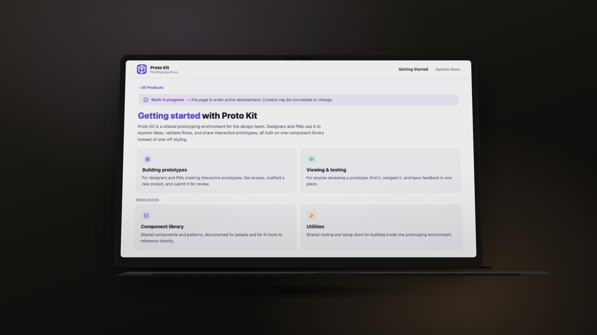
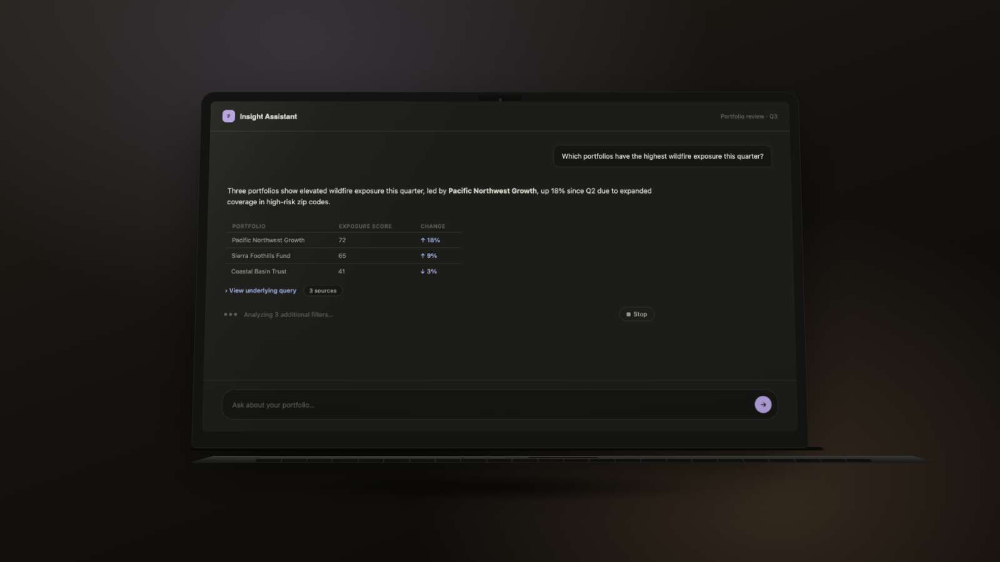

A design initiative gave the team a way to prototype directly in production-grade code, alongside the Moody’s / Nagarro Digital Ventures engagement. I played a part in scaling it: proving what it could hold beyond the problems it was first built for, and helping shape how the design team works inside it today.

A few platform-wide figures for context, plus the part of the initiative I’m walking through below.
Platform-wide figures as estimated by the initiative’s lead.
Static Figma comps couldn’t carry the weight of what our products actually needed to prove out: dense data tables, geospatial tools handling heavy live data, multi-step workflows with no single happy path, validation that has to guide someone rather than overwhelm them. A design initiative within the team set out to fix that, prototyping directly in production-grade code with AI-assisted tooling instead of static frames. It began as a focused spike, proved itself, and scaled with backing from engineering and product leadership. I came in once that foundation already existed.
My part started with the fundamentals: completing engineering onboarding, securing repo access, and taking an active part in the design team conversations that set the ground rules for working responsibly inside a shared codebase. It’s not glamorous work, but it’s what let me build inside the same system engineering actually ships from, in collaboration with the team, rather than prototyping alongside it.
One of five prototypes I proved out on the platform, and the one that best shows both what testing a new format means and the trade-offs that come with it.
The product scope set hard requirements no static comp could satisfy: every answer had to show its sources, expose the logic behind it, and never settle for a paragraph of text when a table, chart, or map answered the question better. That’s exactly why this was worth prototyping in code instead of as flat Figma screens. A click-through can fake a chat bubble, but it can’t fake a real source citation, or a result that legitimately renders as a map in one exchange and a table in the next. The only way to know if the format actually held up was to build something that really worked.

Composed entirely from existing design-system components, deliberately: no need to invent or hardcode anything new. Where the official system didn’t yet cover something the interface needed, I could reach into Proto Core, a supplementary component layer built to hold the gaps the official system hasn’t caught up to yet, so a prototype never has to fake a pattern that doesn’t exist. Every spacing, color, and type value came from the same design tokens production code pulls from, nothing hand-picked. That discipline wasn’t optional: it’s a real constraint of building on this platform. An AI coding assistant only stays trustworthy when it’s steered toward the real system already in place, official components first, Proto Core where needed, tokens throughout, rather than left to improvise its own.
Ship rough, validate, then polish
This is also where I’d point to a real trade-off, not just a build. Rather than polish the experience before anyone outside the team saw it, an early, imperfect version went in front of clients first, gaps and all, specifically to gauge real interest and adoption. Only once that response confirmed the direction was worth the investment did I run a structured audit against it, mapping every gap to the requirement it broke and ranking each by severity, then closed the ones that mattered using patterns already in the design system rather than inventing new ones. The ordering was deliberate: spend the polish once you know the direction has traction, not before.
Testing formats wasn’t the only thing happening in parallel. This part was a team effort I worked alongside, not something I led, and it’s worth including because it shows how the whole practice has matured.
The team kept feeding our AI tools more design system documentation and pattern guidance, trying to get more consistent output that actually matched our real components, tokens, and behaviors. Writing that documentation meant properly exercising every component for the first time, and it surfaced real problems the codebase had been quietly carrying: an AI agent using a property that didn’t exist on a component, uncaught, committed, then copied into the next prototype as a starting point. The fix became three connected layers now built into how the whole team works: a generated, always-current catalog of what’s actually available, documentation rewritten for people with live components instead of screenshots, and a lint rule that fails the build outright on invalid usage.
Still open
This is still active work, not a finished result. The clearest open item right now: stripping the improper component usage that’s already baked into earlier prototypes. Until that’s done, an AI agent building something new can still find one of those old files, copy it as a starting point, and reintroduce a mistake the team already fixed once.
The initiative itself, and the documentation, catalog, and lint-layer work described under “How the design team works now,” are a team effort, not mine alone. Everything from “Getting in” onward describes the part I personally drove: adoption, scaling the format, and testing it with clients. Redacted for repo names, code paths, and plan numbers, and still an active line of practice rather than a closed project.